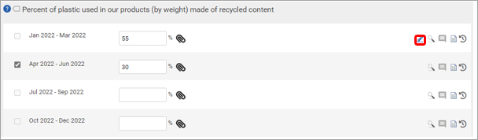

Frameworks users with the Supervisor user role can edit questionnaire responses (Frameworks > Inputs) after the approval process has been completed. To edit an approved response please click on the edit icon of the associated question. Users can then adjust their answer and select save. A record of this update will be added to the audit log for auditing purposes.
Please note, this is only available for responses which have been approved to the highest possible level. Questions which have not been submitted for approval can be edited as normal. Similarly, responses awaiting approval which contain issues should be rejected to return them to their input state. Updated response will not return through the approvals process.
